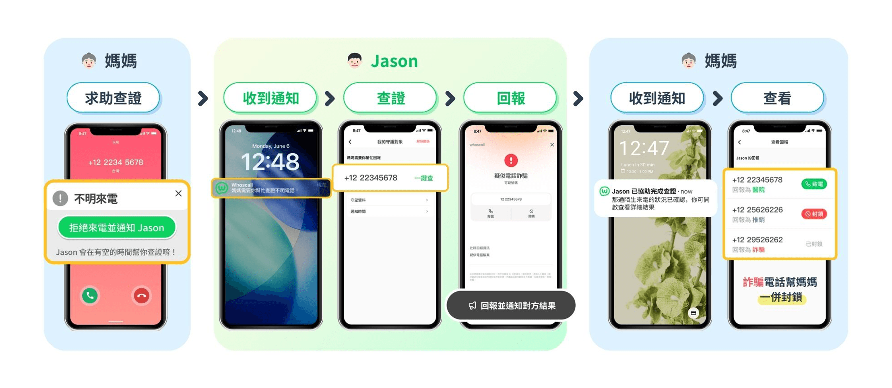
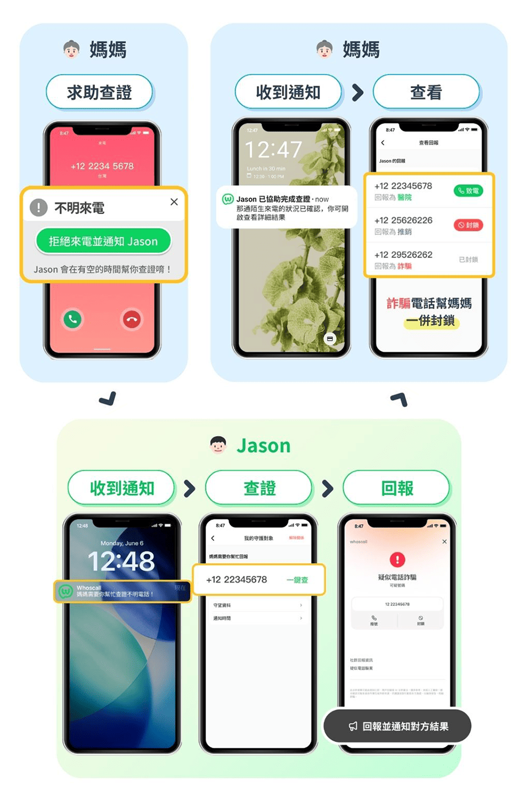

安心守望
UI 設計 (吉祥物繪製/部分介面設計)


由於想培養自己 UI/UX 的實戰經驗，精進產品設計領域的各項技能，我參加了 AAPD 舉辦的「第三屆產品設計挑戰賽」。此競賽與企業方合作，提供產品的願景、商業目標、目前使用者輪廓等資訊，參賽者將進行組隊合作，於兩個月左右的時間，透過設計來解決真實世界的問題。
產品架構
透過「建立關係、參與、回報與成就」的循環，建立「基於信任關係的協作防護」，讓使用者們更願意參與防詐的資訊回報，在擴大社群參與度之餘，同時達成個人化的資訊體驗以及長期使用產品的成就感。


在100多人參與的設計挑戰賽中，我們從 16 組團隊中脫穎而出，獲得佳作的好成績。

以下為評審的部分回饋：
- 不從「如何提升回報率」本身出發，而是以「守護親友」作為核心動機切入，成功將行為驅動與情感連結結合，這個策略選擇非常亮眼。
- 產品背景、市場分析和收斂出來的洞察讓 problem space 一目了然。
- UX 研究包含量化與質化資料，以量化的方式聚焦使用者痛點「回報」。
- 迭代後的設計減少繁雜步驟，降低使用難度。
- 大量運用 Vee 吉祥物元素，讓畫面整體情緒溫暖、親近，與情感導向的提案方向一致。
01. 企業目標與命題
在台灣，詐騙已成為全民威脅，電話號碼外洩率高達 62.4%。Whoscall 作為東亞暨東南亞最大防詐 APP，提供陌生來電與簡訊辨識。其以協助使用者在數位生活的各種情境中維持秩序與安心，實現全方位的安全感為願景。
如何創造一套個人化體驗或資訊模組，讓使用者能真正感受到『自己如何被保護』，並建立長期使用產品的成就感？
因年輕族群詐騙事件逐年上升，企業希望能將目標客群年齡層擴展至 25 歲以下。
擴展社群參與度，讓更多使用者主動參與檢查、回報的防詐行為循環。
02. 問題拆解與探索性研究
我們從企業提供的命題與目標開始發想，探索企業想要解決的問題與其所追求的商業目的，在「個人化」、「保護感」以及「成就感」列出六個次分項：介面與操作優化、更加客製化、強化心理感受、定期與即時、展示型成就感和互動性成就感。

同時，我們也收集社群與 APP 商店的評論，並進行游擊訪談，初步了解市場上使用者對於防詐的想法與 APP 的使用習慣。我們發現：使用者並不主動參與防詐，而是更希望被動地防範，且追求更客製化、個人化的功能。
03. 質化訪談與量化問卷驗證
為了進一步探討使用者為何不主動參與回報，以及真正的痛點，我們進行了量化問卷與質化訪談。
A. 量化問卷 (240份有效樣本)
針對使用經驗、防詐動機與功能想像進行調查，我們發現：
- 回報動機：有回報習慣者多為了「幫助他人避免受騙」與「提升資料準確度」；未回報者主要是因為「操作障礙」、「擔心回報錯誤」或「認為別人會回報」。
- 對象差異：超過 6 成的人擔心親近之人遭遇詐騙，高達 8 成的人曾協助過親友解決資安問題。面對親友的防詐重視度，遠高於對陌生大眾的關心。
- 隱私態度：超過 75% 願意提供通話與簡訊紀錄協助防詐，但針對「聯絡人」與「截圖」，僅約 50% 願意提供。
- 其他期待：重視個資提供的彈性（隨時撤回）、希望有懶人包教學、希望操作簡易且具備情境化提示。
為了親近的家人與朋友，使用者會更願意採取防詐行動。以這樣的「關係」作為驅動，能帶來更多防詐交流的互動機會。
B. 質化訪談 (共14位受訪者)
我們將質化訪談重點放在使用者對防詐的參與感、家庭互助情境及隱私邊界，研究結果發現：
- 肯定家庭協助的必要性，期望有即時通訊防護，但同時非常在意被協助者（長輩）的隱私感受，希望雙方都要互相確認與同意。
- 回報動機低，需要有獎勵機制或能看見成效，且程序必須極簡。
- 希望隱私與功能可高度客製化與彈性調整。
- 希望有防詐快報，但對「遊戲化」學習新知的意願較低。
在確定了家庭協助的實行可能後，我們建立了使用者輪廓以及一個新的HMW，讓團隊後續有明確的行動設計方向。


「我們如何設計一個以親近的人為中心，擴散並創造群體共同守護使命，來鼓勵主動分享和回報威脅資訊，以提升長期使用產品的成就感？」
04. 市場現況
我們調查了目前的競品 (以 2025 年 10 月為基準)，發現在「家庭防護」層面的防詐攔截尚未完全被覆蓋，且個人化設定的程度均不高。除了競品分析外，我們也參考了具備家庭協作功能的軟體，作為隱私控制與遠程協助的設計參考。


05. 頭腦風暴與設計解法
我們利用約 6 小時的時間，將前期的研究分析統整，並進行了 6-3-5 Brainwriting 的頭腦風暴，最終產出了數個設計方向。
隨後透過 影響-投入矩陣(Impact VS Effort Matrix) 進行收斂，統整出兩個最終設計方案：「安心守望」與「守望成就報告」。


06. 設計策略
1. 來電守望：三層守望機制
我們提出「三層守望機制」，多數的詐騙電話在第一層的「來電醒目畫面」以及「家人預設溫馨提示語」即可阻擋。唯有被守望者接起高風險電話，才會觸發第三層守望，避免雙方收到過多干擾。
針對完全不明的來電，考量長輩習慣「接了再說」，我們設計了「拒絕來電並通知守望者」選項，由守望者代為查詢。查詢結果經雙方確認並由企業核可後，即可公開豐富防詐資料庫。
守望者 (Jason) 絕對不會接收到任何被守望者 (媽媽) 不希望被看見的通話資訊。
- 明確功能介紹：讓雙方清楚知道彼此權利與隱私，所有提醒皆建立在信任、不監控的基礎上。
- 暫時解除守望關係：若覺得干擾，可選擇暫時解除並設定時間，這是比直接取消授權更溫和的手段。
- 個人資料與溫馨提示語：可上傳照片或使用吉祥物。守望者設定的溫馨提示語，會在可疑來電時顯示，讓防詐更具人情味。


2. 守望報告
- 一目了然看到近期的風險與守望成果。
- 一鍵生成精美報告圖，並能迅速把守望成就分享給親友或轉發到各個社群軟體。
- 能看到自己回報的號碼幫助了多少使用者以及阻擋了多少詐騙號碼。
期望藉由感受守望的成就與力量，鼓勵使用者分享給親友，進而促使更多人成為「守望者」。

07. 設計驗證與迭代
為了達到更好的體驗，我們針對現有的設計流程進行測試，著重於使用者能否理解「安心守望」核心價值、對隱私與監控感的反應，以及 UI 介面的操作性。
我們邀請了 10 位使用者 (包含 2 組親人關係) 進行測試，收到了許多正面回饋：


根據使用者反饋，我們進行了以下迭代優化：
首頁重新佈局
大部分使用者停留在頁面時，沒有意識到「我的守望者」可以往上滑，因此忽略了這個重要區塊。為了提高使用者被保護的存在感，我們將「我的守望者」向上提高一個層級 ，並把這個區域改成「點擊查看」。


更快速的守望建立連結
在測試過程中，部分用戶更偏好透過 QR CODE 建立即時連結。
因此我們加入「掃碼功能」，讓守望者與被守望者能更快速，甚至當面即可完成綁定流程。


刪除 15 秒高風險來電提示 (降低干擾)
大部分用戶沒有「單獨關閉15秒高風險來電提示」的需求，有些用戶甚至對此開關感到疑惑， 因此我們決定刪除此開關，讓介面更簡單易懂。


守望者自訂通知頻率
部分守望者生活忙碌，無法即時查證不明來電，且通知過於頻繁也容易造成疲勞。 因此我們加入「守望者自訂通知頻率」功能，守望者可自行選擇方便的通知時段。被守望者也會在來電畫面收到提示，安心等待查證結果。


針對不同平台的規範差異，我們進行不同的設計：
Android 支援完整的即時互助
- 可偵測通話狀態
- 可在通話中顯示提醒
- 可在條件成立時通知守望者
同時也因為45-75歲年齡層超過50％的使用者手持Android裝置，因此我們會將針對被守望者的功能完整落地於Android平台上
iOS 的限制與技術調整
- 無法知道是否接聽
- 無法在通話中介入
- 無法疊加 UI 在原生通話畫面
由於上述限制與規範，我們在iOS平台上調整為通話事件結束後，以「通知」提醒被守望者，再由被守望者決定是否通知守望者幫忙查證。
08. 設計系統
我們延續Whoscall的綠色調來進行設計，並建立一套元件庫以維持介面的一致性，同時我們因應使用場景的需求，設計不同的Whoscall吉祥物來展現。


09. 學習與反思
相較於記帳或雲端發票等生活化 APP，我們在訪談後發現，使用者對於「防詐」這件事並沒有強烈主動的動機，普遍認為防詐應該是「默默在背後保護」的機制。
因此，我們團隊決定不朝向「遊戲化 (Gamification)」的方向發展，而是選擇「情感動機」作為核心，透過家庭與親友間的羈絆，有效且溫暖地強化大眾回報與參與防詐的意願。這也是本次專案中最讓我印象深刻的策略轉換。
除此之外，由於AI科技的進步，我們這組導入了許多AI的工具，如NotebookLM協助我們紀錄會議以及質化訪談的逐字稿產出、Gemini讓我們能夠迅速發散思想，並能即時提供我們不熟悉的產業知識，更有組員結合Adobe Firefly以及Gemini來製作AI行銷影片，讓評審們更了解我們的設計概念以及產品架構，藉由這次團隊的合作，讓我了解到AI還有許多能夠發展以及應用的空間。